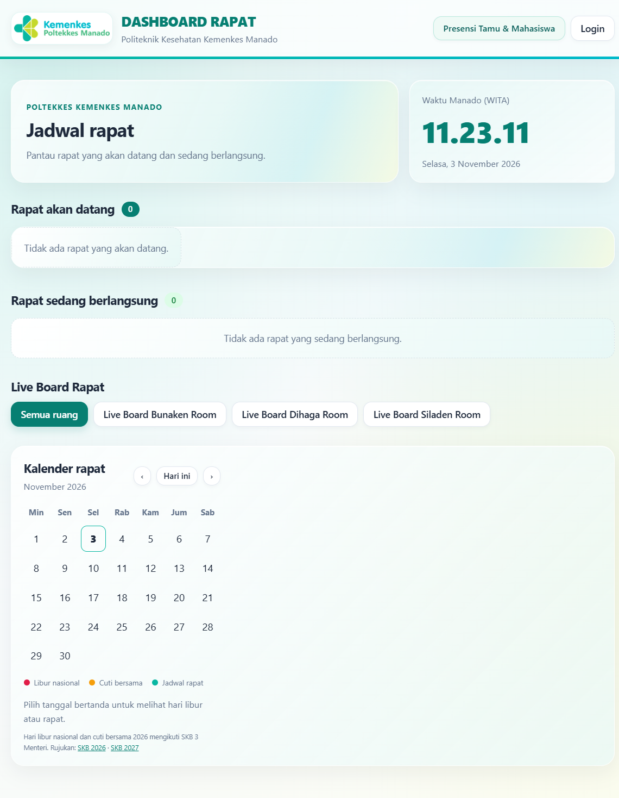
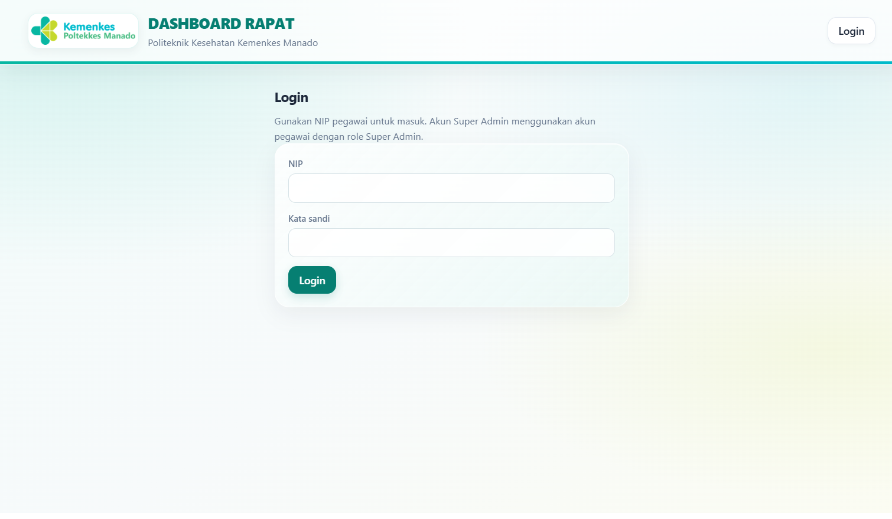
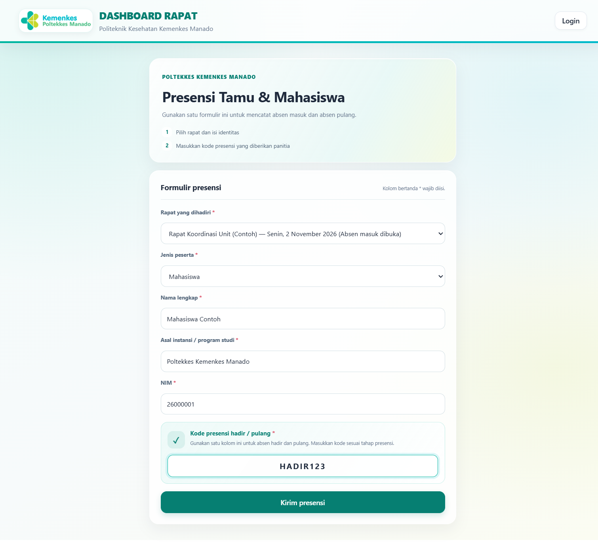
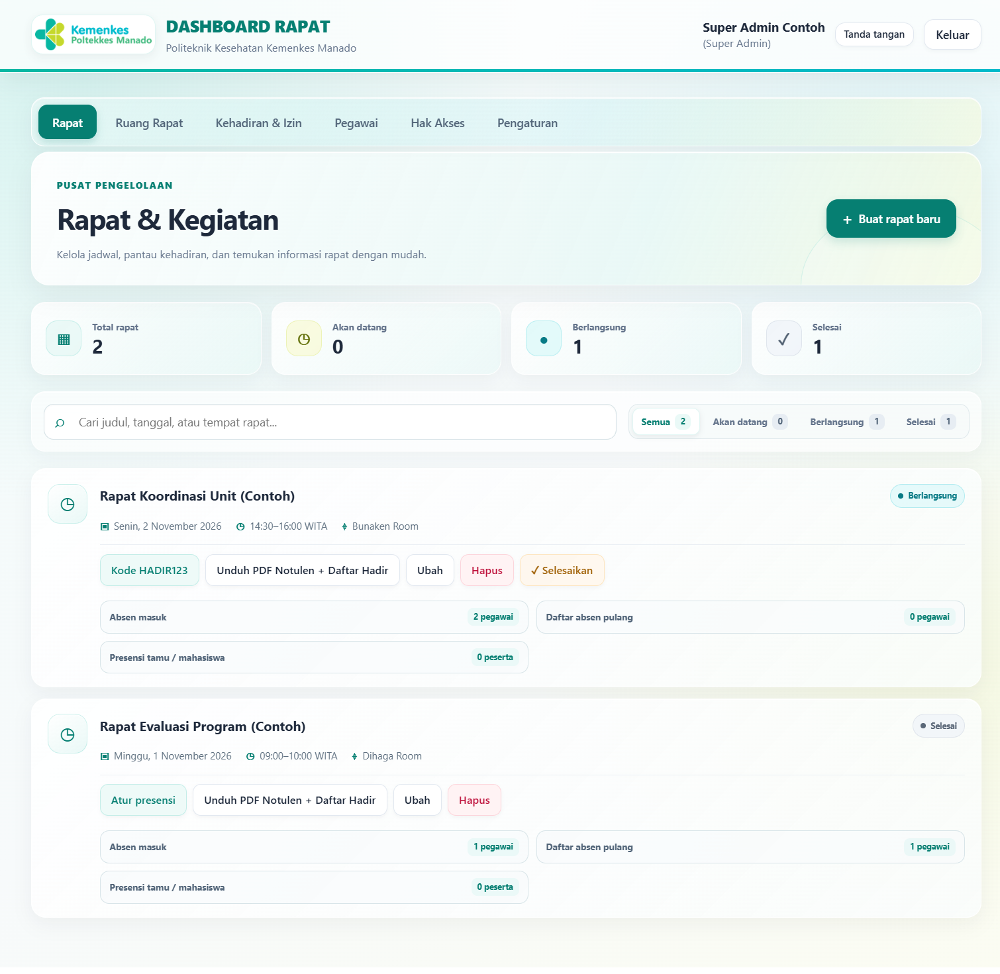
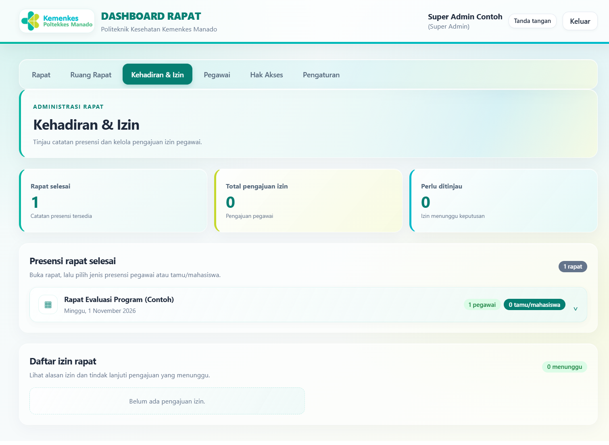
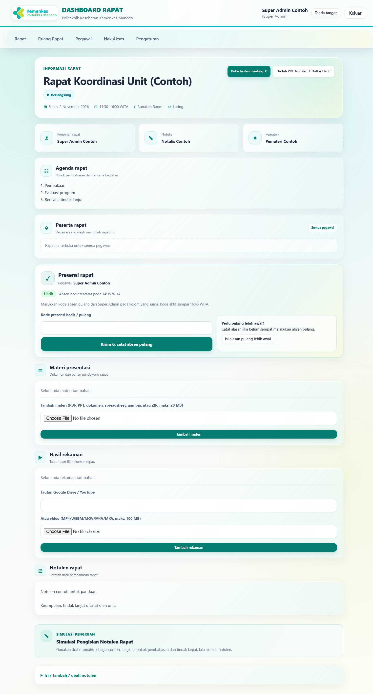
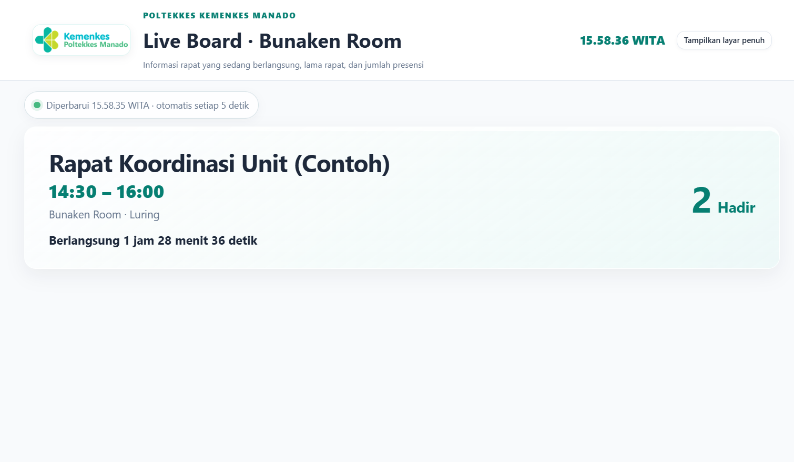

Pegawai dapat langsung membaca Bab 3.1, 4, dan 5. Pengelola Rapat membaca Bab 3.2 serta Bab 6–9. Super Admin membaca Bab 3.3 dan 10. Bab publik dan bantuan berlaku untuk semua pengguna.
Konvensi dalam panduan
Nama menu dan tombol ditulis tebal sesuai label yang tampil pada aplikasi.
Waktu rapat mengikuti WITA. Tangkapan layar dapat menampilkan data demonstrasi fiktif dan bukan akun/kode yang boleh digunakan.
Menu dapat berbeda mengikuti role aktif dan izin Pengelola Rapat yang telah diatur Super Admin.
Bab 1 · Tentang aplikasi
Aplikasi Rapat dan panduan ini
Sistem untuk melihat jadwal, mengelola kegiatan rapat, mencatat kehadiran, dan menyiapkan laporan.
Aplikasi menyatukan jadwal, informasi rapat, presensi, notulen, dan laporan. Halaman publik menampilkan jadwal serta Live Board; tindakan internal mengikuti role pengguna.
Cakupan buku: penggunaan dashboard hingga presensi, pengelolaan rapat, akun, role, dan laporan.
Pengguna
Akses utama
Bagian panduan
Pengunjung
Melihat jadwal publik, kalender, dan Live Board.
Bab 4 dan 11
Pegawai
Melihat detail rapat, mencatat presensi sendiri, mengajukan izin, dan menyetujui notulen jika ditugaskan.
Bab 3.1, 4, 5, 9
Pengelola Rapat
Mengelola rapat sesuai izin global yang ditetapkan Super Admin serta batas edit notulen.
Bab 3.2, 6–9
Super Admin
Mengelola akun, role, izin, ruang, kode presensi, pengaturan, serta siklus rapat manual.
Bab 3.3, 10
Tamu / Mahasiswa
Mengisi presensi mandiri menggunakan formulir publik dan kode dari panitia.
Bab 5
Alamat: gunakan alamat resmi dari administrator. http://127.0.0.1:8000 hanya berlaku pada komputer pengembangan lokal.
Alur cepat
Buka dashboard → login dengan NIP → pilih rapat → periksa agenda dan waktu WITA → isi presensi atau gunakan tindakan yang diizinkan role.
Catatan gambar
Nama, jadwal, dan akun pada screenshot merupakan data demonstrasi fiktif. Gunakan hanya NIP dan kode dari institusi/panitia, bukan data contoh.
Bab 2 · Alur utama
Perjalanan sebuah rapat
Gunakan alur ini untuk mengetahui siapa mengerjakan apa, dari persiapan sampai laporan selesai.
1. Persiapan dan pelaksanaan
Super Admin / Pengelola berizin: buat jadwal, pilih peserta, tetapkan pimpinan dan notulis, isi agenda.
Super Admin / Pengelola Rapat: tekan Mulai Rapat pada dashboard atau daftar Rapat saat rapat benar-benar dimulai. Jika sampai pukul 00:00 WITA setelah tanggal rapat berakhir rapat belum dimulai, sistem otomatis membatalkannya.
Super Admin: buka kode hadir dan informasikan kode yang aktif kepada peserta; peserta dapat mengisi presensi setelah rapat dimulai.
Pegawai / Tamu / Mahasiswa: buka detail atau formulir publik, lalu isi presensi pada rapat yang tepat.
Pengelola: pantau rapat dan kehadiran jika izin presensi tersedia.
2. Penyelesaian dan dokumentasi
Pengelola atau Super Admin: tekan Akhiri Rapat setelah rapat benar-benar berakhir. Jika belum diakhiri sampai pukul 00:00 WITA setelah tanggal rapat berakhir, sistem otomatis menyelesaikannya, mencatat overtime sampai batas waktu tersebut, dan membuka kode pulang otomatis 30 menit bila belum ada kode pulang aktif.
Pegawai: isi kode pulang atau tambahkan alasan bila pulang lebih dahulu/belum dapat mengisi.
Notulis yang ditunjuk dan Pengelola Rapat: isi/edit notulen sebelum tenggat. Pimpinan dan notulis: periksa dan setujui versi terbaru dari menu Tanda tangan.
Pengelola berizin: tinjau daftar hadir, proses izin, dan unduh laporan yang tersedia.
Pemisahan kewenangan
Membuat jadwal, memantau daftar hadir, dan mengatur kode presensi merupakan kewenangan yang berbeda. Pengelola Rapat yang boleh melihat kehadiran tidak otomatis boleh membuka kode. Ikuti role dan izin yang tampil pada akun.
Panduan role · 1 dari 4
Pegawai: akses dan alur kerja
Akun Pegawai dipakai untuk mengikuti rapat, mencatat kehadiran pribadi, dan menyelesaikan tugas yang diberikan kepada akun tersebut.
Yang dapat dilakukan Pegawai
Login menggunakan NIP dan kata sandi pada halaman Login yang sama dengan Pengelola Rapat dan Super Admin.
Melihat jadwal dan detail rapat, termasuk waktu, lokasi/moda, agenda, peserta, pimpinan/notulis, tautan rapat, materi, rekaman, dan notulen yang tersedia.
Mengisi absen masuk saat rapat berlangsung menggunakan kode aktif dari panitia; setelah hadir, mengisi absen pulang dengan kode terpisah.
Mengajukan izin sakit, dinas, atau keperluan lain dengan alasan dan bukti bila diminta. Status izin diproses oleh pengelola yang berwenang.
Mengisi alasan/keterangan jika pulang lebih dahulu atau belum berhasil mengisi absen pulang.
Membaca notulen rapat yang dapat diakses; jika ditunjuk sebagai notulis, mengisi/mengedit notulen sampai tenggat. Persetujuan dilakukan dari menu Tanda tangan jika ditetapkan sebagai pimpinan atau notulis.
Membuka avatar/inisial akun di samping nama untuk masuk ke Profil, mengganti kata sandi, atau memasang foto profil.
Yang tidak tersedia untuk Pegawai biasa
Tidak dapat membuat, mengubah, atau menghapus jadwal rapat; mengatur ruang; mengubah role/akun; atau membuka kode presensi.
Tidak dapat melihat daftar identitas presensi pegawai lain, memutuskan izin pegawai lain, atau mengunduh laporan administrasi kecuali mendapat role/izin yang sesuai.
Pegawai yang bukan notulis rapat tidak dapat mengedit notulen. Penunjukan notulis hanya memberi akses pada rapat terkait dan tunduk pada tenggat yang sama dengan Pengelola Rapat.
Langkah kerja yang disarankan
Login → pilih rapat pada dashboard → periksa agenda dan waktu WITA → isi kode masuk → isi kode pulang saat dibuka → pastikan status tercatat → keluar dari akun jika memakai perangkat bersama.
Role rangkap
Pengelola Rapat tetap merupakan akun pegawai dan dapat memakai mode Pegawai untuk tugas kehadiran pribadi. Beralih mode tidak mengubah NIP atau kata sandi. Super Admin juga login menggunakan akun pegawainya sendiri.
Panduan role · 2 dari 4
Pengelola Rapat: akses operasional
Pengelola Rapat adalah role kerja untuk mengatur kegiatan. Fitur tertentu dapat dibatasi oleh Super Admin dan pengaturannya berlaku bagi semua Pengelola Rapat.
Fitur yang bisa diaktifkan oleh Super Admin
Izin
Jika diaktifkan, Pengelola dapat…
Buat Rapat
Membuat, mengubah, dan menghapus jadwal serta mengatur informasi, peserta, agenda, pimpinan, dan notulis.
Materi Presentasi
Mengunggah atau mengelola materi rapat sesuai batas ukuran/jenis berkas yang ditampilkan.
Tautan Rekaman
Menambahkan tautan rekaman dan mengelola rekaman dari detail rapat.
Presensi & Kehadiran
Melihat daftar hadir/pulang pegawai dan tamu, memproses izin, serta membuka ekspor laporan yang tersedia.
Kelola grup jurusan/unit undangan
Membuat atau menghapus grup dan memakai grup untuk memilih peserta rapat.
Notulen dan tenggat edit
Pengelola Rapat dapat mengisi/mengedit notulen sampai batas hari yang ditentukan Super Admin. Notulis yang ditunjuk untuk rapat tersebut juga dapat mengedit sampai tenggat yang sama. Setelah tenggat, hanya Super Admin yang dapat mengubah notulen.
Selalu dapat dilakukan saat berada pada mode Pengelola
Melihat dashboard internal dan detail rapat, memakai tombol Beralih ke mode untuk kembali ke mode Pegawai, serta memulai dan mengakhiri rapat secara manual. Jika rapat tidak dimulai atau tidak diakhiri hingga pukul 00:00 WITA setelah tanggal rapat berakhir, sistem membatalkan atau mengakhirinya secara otomatis.
Jika diberi izin presensi, meninjau daftar dan laporan. Izin ini tidak memberikan akses untuk membuat, memperpanjang, atau menutup kode hadir/pulang.
Menggunakan materi dan rekaman yang tersedia walaupun izin untuk mengubah konten tersebut tidak diaktifkan. Pengelolaan notulen mengikuti tenggat yang berlaku pada rapat.
Batas akses
Pengelola Rapat tidak mengelola akun/role pegawai, pengaturan aplikasi, maupun master ruang; tidak mengatur kode presensi; dan tidak bisa mengatur ulang kata sandi pegawai lain. Pengelola dapat mengubah kata sandinya sendiri melalui Profil.
Perubahan izin berlaku bersama
Super Admin mencentang izin pada menu Hak Akses lalu menyimpan. Pengaturan ini berlaku global untuk semua akun Pengelola Rapat, bukan izin terpisah per orang.
Panduan role · 3 dari 4
Super Admin: kendali administrasi
Super Admin memiliki akses penuh ke fitur pengelolaan. Tetap gunakan akun sendiri dan berikan role Super Admin hanya kepada petugas yang berwenang.
Administrasi akun dan hak akses
Buka menu Pegawai untuk menambah akun dengan nama, NIP 18 digit, dan jabatan; mencari/memperbarui jabatan; mengatur role; mengatur ulang kata sandi; atau menghapus akun.
Akun baru memakai NIP sebagai kata sandi awal dan wajib menggantinya saat login pertama. Saat reset kata sandi, berikan kata sandi baru secara pribadi; pegawai diwajibkan menggantinya lagi.
Buka Hak Akses untuk melihat daftar Super Admin/Pengelola Rapat serta mengaktifkan izin operasional Pengelola. Perubahan izin berlaku untuk semua akun Pengelola Rapat.
Memulai rapat dengan Mulai Rapat dan mengakhirinya dengan Akhiri Rapat. Jadwal selesai tidak mengakhiri rapat otomatis; overtime dicatat hingga rapat diakhiri manual.
Membuka, memperbarui, memperpanjang, atau menutup kode absen masuk dan kode pulang. Pilih kode sendiri atau biarkan sistem membuatnya otomatis; sampaikan hanya kepada peserta dan pantau masa berlakunya.
Memantau presensi, memproses izin, melihat keterangan absen pulang, dan mengunduh laporan sesuai menu yang tersedia.
Membuka Ruang Rapat untuk menambah, mengganti nama, atau menghapus ruang. Pada Pengaturan, mengatur kewajiban surat izin dan batas default edit notulen.
Menetapkan batas edit notulen global (1–365 hari) pada Pengaturan. Nilai ini berlaku untuk seluruh rapat dan dihitung sejak rapat selesai; setelah tenggat, hanya Super Admin yang dapat mengedit.
Tindakan yang berdampak besar
Akhiri rapat hanya bila benar-benar berakhir; waktu selesai aktual dan overtime tersimpan, lalu kode pulang otomatis dibuka selama 30 menit jika belum ada kode aktif. Penghapusan pegawai/rapat dapat menghapus data terkait. Periksa kembali identitas, judul, dan tanggal sebelum mengonfirmasi.
Petunjuk kode pulang
Kode pulang terpisah dari kode masuk. Masa berlakunya dapat dipilih 15, 30, atau 60 menit. Kode yang dibuat Super Admin dapat digunakan sesuai status dan waktu kedaluwarsanya; tutup kode jika tidak lagi diperlukan.
Panduan role · 4 dari 4
Matriks perbedaan hak akses
Ringkasan berikut membandingkan role Pegawai biasa, Pengelola Rapat, dan Super Admin. Fitur Pengelola bergantung pada izin global yang diaktifkan.
Fitur
Pegawai
Pengelola Rapat
Super Admin
Lihat jadwal, detail, agenda, materi/notulen yang tersedia
Ya
Ya
Ya
Presensi pribadi / ajukan izin sendiri
Ya
Ya, mode Pegawai
Ya
Buat, ubah, dan hapus rapat
Tidak
Jika izin Buat Rapat aktif
Ya
Mulai dan akhiri rapat secara manual
Tidak
Ya
Ya
Rapat otomatis dibatalkan/diakhiri pada batas tengah malam
Tidak
Otomatis
Otomatis
Edit notulen
Hanya jika ditunjuk sebagai notulis, sampai tenggat
Sampai tenggat rapat
Tanpa batas waktu
Kelola materi dan rekaman
Tidak
Per izin masing-masing
Ya
Lihat daftar hadir/pulang dan proses izin orang lain
Tidak
Jika izin Presensi & Kehadiran aktif
Ya
Buat/perpanjang/tutup kode presensi masuk dan pulang
Tidak
Tidak
Ya
Kelola akun, role, dan reset kata sandi
Tidak
Tidak
Ya
Kelola ruang dan aturan aplikasi
Tidak
Tidak
Ya
Tanda tangan notulen sebagai pimpinan/notulis yang ditunjuk
Jika ditugaskan
Jika ditugaskan
Jika ditugaskan
Jika menu atau tombol tidak muncul
Periksa role yang dipakai dan izin Pengelola Rapat. Untuk izin yang belum tersedia, minta Super Admin memeriksa menu Pegawai atau Hak Akses. Ketiadaan menu tidak dapat diatasi hanya dengan membuka tautan secara langsung.
Ketentuan kata sandi
Seluruh role memakai satu halaman Login dan NIP sendiri. Setiap pengguna dapat mengganti kata sandi sendiri melalui Profil dengan memasukkan kata sandi saat ini; reset kata sandi akun lain hanya dilakukan Super Admin.
Bab 4 · Memulai
Dashboard dan jadwal rapat
Dashboard menampilkan jadwal rapat, jam Manado (WITA), kalender, serta akses cepat ke presensi tamu dan Live Board.

Gambar 1. Dashboard publik terbaru. Jumlah dan daftar rapat mengikuti data yang terdaftar; jam mengikuti waktu Manado (WITA).1234
1 Tombol presensi tamu/mahasiswa dan Login2 Judul dashboard dan jam WITA3 Daftar rapat akan datang/berlangsung4 Pintasan Live Board dan kalender
Gunakan tombol Presensi Tamu & Mahasiswa untuk membuka formulir publik, atau Login untuk masuk menggunakan akun.
Pegawai yang sudah login dapat memilih kartu rapat untuk membuka detail. Pengunjung hanya melihat informasi yang disediakan untuk publik.
Jam dan tanggal Manado (WITA) kini tampil di samping judul Jadwal rapat. Kartu ringkasan jumlah rapat yang sebelumnya berada di bagian atas sudah dihapus; daftar rapat tetap tersedia di bawah judulnya.
Gulir ke bawah untuk membuka Semua ruang atau Live Board ruang tertentu, serta gunakan kalender untuk melihat tanggal bertanda dan jadwal/libur.
Jika daftar rapat kosong
Artinya belum ada rapat yang akan datang/berlangsung pada saat itu, atau filter tanggal/status tidak menampilkan rapat. Tangkapan layar ini menunjukkan kondisi tanpa rapat aktif; kalender dan tautan tetap dapat digunakan.
Bab 4 · Akun pengguna
Login & kata sandi
Pegawai, Pengelola Rapat, dan Super Admin masuk melalui halaman Login yang sama.

Gambar 2. Halaman Login. Masukkan NIP dan kata sandi akun Anda.123
1 NIP pegawai2 Kata sandi3 Tombol Login
Pilih Login dari bagian atas dashboard.
Isi NIP dan Kata sandi, lalu pilih Login.
Akun pegawai baru biasanya menggunakan NIP sebagai kata sandi awal dan diwajibkan membuat kata sandi baru pada login pertama.
Kata sandi baru harus sedikitnya 8 karakter. Masukkan kata sandi yang sama pada kolom konfirmasi, lalu simpan.
Lupa kata sandi?
Jika masih dapat login, buka Profil dan ganti kata sandi dengan memasukkan kata sandi saat ini. Jika lupa dan tidak dapat login, hubungi Super Admin untuk reset; kata sandi hasil reset wajib diganti saat login berikutnya.
Menu Profil dan foto
Pilih avatar/foto atau inisial di samping nama akun. Pada halaman Profil, unggah foto JPG, PNG, atau WEBP (maks. 5 MB), atau ganti kata sandi minimal 8 karakter setelah memasukkan kata sandi saat ini. Jika belum ada foto, avatar menampilkan inisial nama.
Pengelola Rapat memakai NIP sendiri. Jika memiliki role tersebut, gunakan tombol mode untuk berpindah antara fitur Pegawai dan Pengelola Rapat.
Jaga akun Anda
Jangan bagikan kata sandi atau kode presensi. Setelah selesai, pilih Keluar, terutama pada komputer bersama.
Bab 4 · Pegawai
Absen masuk, absen pulang, dan izin
Presensi pegawai dilakukan dari detail rapat menggunakan kode yang dibagikan oleh Super Admin/panitia.
Login, cari rapat pada dashboard, lalu pilih kartu rapat untuk membuka detail rapat.
Saat rapat berlangsung dan kode hadir dibuka, masukkan kode hadir pada kolom Kode presensi hadir / pulang, lalu pilih Kirim & catat absen hadir.
Setelah hadir tercatat, gunakan kolom yang sama untuk kode pulang saat kode pulang dibuka. Kirim melalui tombol absen pulang.
Pastikan status menunjukkan waktu masuk dan, setelah mengisi, waktu pulang. Satu akun hanya mencatat satu kehadiran per rapat.
Mengajukan izin
Buka detail rapat yang sesuai.
Pilih jenis izin: Sakit, Dinas, atau Keperluan lain.
Isi alasan dan lampirkan bukti jika diminta.
Kirim dan pantau status dari Pengelola Rapat.
Belum absen pulang?
Jika Anda pulang lebih dahulu, isi alasan/keterangan pada detail rapat. Jika lupa, catatan presensi akan menampilkan status belum absen pulang kepada pengelola.
Waktu dan kode
Jam rapat menggunakan format 24 jam dan zona WITA. Kode masuk dan kode pulang berbeda; gunakan kode yang sesuai dengan tahap presensi dan batas waktu yang disampaikan panitia.
Bab 5 · Presensi publik
Presensi tamu & mahasiswa
Formulir ini tidak memerlukan login, tetapi hanya dapat dikirim jika ada rapat yang membuka presensi.

Gambar 3. Contoh formulir saat jenis peserta Mahasiswa dipilih; kolom NIM wajib diisi.123
1 Pilih rapat dan jenis peserta2 Isi nama, asal, serta NIM mahasiswa3 Kode presensi dan kirim
Buka Presensi Tamu & Mahasiswa dari dashboard atau alamat formulir yang diberikan panitia.
Pilih rapat yang dihadiri. Pilihan hanya tersedia saat presensi rapat dibuka.
Pilih jenis peserta. Untuk Mahasiswa, isi NIM; untuk Tamu / undangan, isi nama dan asal instansi.
Masukkan kode yang diberikan panitia, periksa kembali pilihan rapat dan identitas, lalu pilih Kirim presensi.
Untuk absen pulang, isi formulir yang sama dengan identitas yang sama dan kode pulang.
Tombol kirim belum aktif?
Belum ada rapat yang membuka presensi. Tanyakan kepada panitia kapan kode/absen dibuka. Formulir tidak dapat mencatat kehadiran sebelum rapat tersedia dan kode yang benar dimasukkan.
Jika identitas sudah pernah tercatat, sistem menolak presensi ganda untuk orang yang sama pada rapat tersebut. Pastikan ejaan nama, asal, jenis peserta, dan NIM benar.
Bab 6 · Pengelola Rapat
Membuat & mengelola rapat
Menu Rapat menampilkan status, pencarian, serta tindakan sesuai hak akses akun.

Gambar 4. Menu Rapat akun Super Admin demonstrasi; akses pada akun Pengelola Rapat bergantung pada izin.123
1 Navigasi menu administrasi2 Tindakan membuat rapat3 Ringkasan dan daftar rapat
Pilih menu Rapat, lalu Buat rapat baru.
Isi judul, tanggal, waktu mulai/selesai, moda (Luring/Daring/Hybrid), ruang, agenda, pimpinan, dan notulis.
Waktu menggunakan format 24 jam, misalnya 13:30. Waktu selesai harus setelah waktu mulai.
Pilih rapat untuk semua pegawai atau pilih peserta per grup jurusan/unit. Buka grup, gunakan pencarian bila perlu, lalu pilih pegawai atau tombol Pilih semua pegawai dalam grup. Tombol Kosongkan pilihan grup hanya menghapus centang grup tersebut. Periksa jumlah peserta sebelum menyimpan.
Lengkapi tautan rapat daring atau pemateri bila diperlukan. Tambahkan materi/rekaman hanya jika role Anda memiliki izin.
Periksa ringkasan sebelum menyimpan. Rapat yang dibuat dapat ditemukan pada dashboard dan daftar Rapat; Super Admin atau Pengelola Rapat perlu menekan Mulai Rapat untuk memulai. Rapat yang belum dimulai sampai batas tengah malam setelah tanggal rapat berakhir otomatis dibatalkan.
Perubahan rapat
Gunakan pencarian/filter untuk menemukan rapat, lalu pilih Ubah. Menghapus rapat tidak sama dengan menyelesaikannya; tindakan hapus dapat menghapus data terkait, jadi periksa judul dan tanggal sebelum mengonfirmasi.
Bab 7 · Kode presensi
Membuka kode & memantau kehadiran
Pengelolaan kode presensi hanya tersedia untuk Super Admin. Pengelola Rapat yang memiliki izin dapat meninjau daftar.
Pada daftar rapat, pilih Atur presensi atau buka detail rapat.
Di bagian Absen masuk, masukkan kode yang akan dibagikan atau biarkan kosong agar kode dibuat otomatis. Tentukan masa aktif, lalu buka/perbarui kode.
Sampaikan kode hadir hanya kepada peserta rapat selama masa berlakunya. Perpanjang atau tutup kode dari layar yang sama bila diperlukan.
Buat kode absen pulang secara terpisah, tentukan berapa lama kode berlaku setelah rapat selesai, lalu sampaikan saat peserta akan mengisi absen pulang.
Pantau daftar absen masuk/pulang dan status kehadiran pada kartu rapat atau menu Kehadiran & Izin.
Mulai, overtime, dan mengakhiri rapat
Rapat dimulai saat Super Admin atau Pengelola Rapat menekan Mulai Rapat. Rapat yang belum dimulai hingga pukul 00:00 WITA setelah tanggal rapat berakhir otomatis berstatus Dibatalkan. Rapat yang sudah dimulai tetap berlangsung melewati waktu selesai terjadwal sampai tombol Akhiri Rapat ditekan atau tiba pukul 00:00 WITA setelah tanggal rapat berakhir. Pada batas tersebut, sistem mengakhiri rapat, menyimpan overtime sampai tengah malam, dan membuka kode pulang otomatis selama 30 menit bila belum ada kode aktif. Pastikan Laravel Scheduler berjalan setiap menit agar penutupan dan pembatalan otomatis diproses.
Status yang perlu diperhatikan
Hadir: absen masuk telah tercatat.
Sudah Absen Pulang: waktu pulang tersimpan.
Belum Absen Pulang: belum ada waktu pulang; minta pegawai mengisi alasan bila pulang lebih dahulu.
Menunggu rapat selesai: kode/aksi pulang belum tersedia pada tahap tersebut.
Bab 8 · Kehadiran, izin, dan laporan
Meninjau catatan & mengekspor laporan
Gunakan menu Kehadiran & Izin untuk rapat selesai dan pengajuan izin pegawai.

Gambar 5. Ringkasan Kehadiran & Izin. Pilih rapat selesai untuk membuka rincian.123
1 Menu Kehadiran & Izin2 Ringkasan laporan3 Buka rapat selesai
Pilih kartu rapat selesai untuk membuka rincian daftar hadir.
Pilih jenis presensi Pegawai atau Tamu / Mahasiswa.
Gunakan tombol Ekspor Excel untuk mengunduh daftar presensi sesuai jenis peserta.
Pegawai yang sudah login, Pengelola Rapat, dan Super Admin dapat menggunakan Unduh PDF Notulen + Daftar Hadir setelah rapat selesai dan notulen diisi. PDF dapat diunduh sebelum persetujuan tanda tangan lengkap.
Memproses izin
Di bagian Daftar izin rapat, cari pengajuan yang berstatus Menunggu. Baca alasan dan bukti yang dilampirkan, lalu pilih Setujui atau Tolak sesuai kewenangan dan prosedur unit.
Data laporan
Laporan dapat memuat nama, NIP, NIM, asal instansi, waktu masuk/pulang, dan alasan izin. Unduh dan bagikan hanya kepada pihak yang berwenang.
Bab 9 · Notulen & persetujuan
Mengisi notulen & tugas tanda tangan
Jika ditugaskan sebagai pimpinan rapat atau notulis, persetujuan dilakukan menggunakan akun pegawai masing-masing.

Gambar 6. Detail rapat menampilkan agenda, presensi, materi, rekaman, dan bagian notulen sesuai hak akses.123
1 Informasi inti dan jadwal2 Peserta dan presensi3 Materi, rekaman, dan notulen
Pengelola Rapat atau notulis yang ditunjuk membuka detail rapat, lalu mengisi/mengedit bagian Notulen rapat dengan pembahasan, kesimpulan, dan tindak lanjut sebelum tenggat.
Tenggat awal adalah 7 hari setelah rapat selesai. Super Admin dapat mengubah batas global di Pengaturan (1–365 hari); perubahan ini berlaku untuk seluruh rapat. Batas tidak diatur pada formulir masing-masing rapat.
Setelah rapat selesai, pimpinan dan notulis yang ditugaskan membuka menu Tanda tangan.
Baca detail rapat dan notulen. Pilih Terima & setujui hanya jika dokumen sudah diperiksa.
Permintaan tanda tangan dari rapat yang dibatalkan tetap tercantum sebagai informasi. Setelah halaman Tanda Tangan dibuka, notifikasinya dianggap sudah dilihat; permintaan rapat lain yang belum disetujui tetap dihitung.
PDF notulen dan daftar hadir dapat diunduh setelah rapat selesai dan notulen diisi, tanpa menunggu persetujuan tanda tangan. QR pada kolom pimpinan dan notulis mengarah ke halaman verifikasi aplikasi.
Perubahan dokumen
Sebelum pimpinan dan notulis mengonfirmasi tanda tangan digital, hasil pindai QR menampilkan status Surat Belum Terverifikasi beserta informasi rapat pada halaman verifikasi. Setelah kedua pihak menyetujui notulen versi terbaru, status berubah menjadi terverifikasi. Setelah tenggat, Pengelola Rapat dan notulis tidak dapat mengubah notulen; hanya Super Admin yang dapat mengedit. Jika isi rapat atau notulen berubah setelah persetujuan, tanda tangan untuk versi lama tidak lagi berlaku dan perlu diminta kembali. QR aplikasi adalah verifikasi internal, bukan sertifikat tanda tangan elektronik BSrE.
Bab 10 · Super Admin
Akun, role, ruang, dan hak akses
Menu administrasi hanya terlihat bagi akun yang memiliki kewenangan terkait.
Kelola pegawai
Tambah pegawai dengan nama, NIP, jabatan, dan grup jurusan/unit bila tersedia.
Atur role: Pegawai, Pengelola Rapat, atau Super Admin.
Pengaturan ulang sandi menggunakan minimal 8 karakter; berikan sandi baru secara pribadi kepada pegawai.
Gunakan pencarian untuk menemukan nama, NIP, atau jabatan.
Hak akses pengelola
Aktifkan izin operasional Pengelola Rapat untuk rapat, materi, rekaman, daftar hadir, dan grup undangan sesuai kebijakan. Tenggat edit notulen diatur pada Pengaturan, bukan melalui centang izin ini.
Izin Pengelola Rapat berlaku pada seluruh akun dengan role tersebut.
Pengelolaan ruang hanya dapat dilakukan Super Admin; batasi jumlah akun Super Admin sesuai kebijakan institusi.
Grup undangan jurusan/unit
Pada Pegawai, atur role akun menjadi Pengelola Rapat. Pada menu Hak Akses, centang Kelola grup jurusan/unit undangan, lalu pilih Simpan Hak Akses. Izin ini berlaku untuk semua Pengelola Rapat.
Buka Grup Undangan, masukkan nama jurusan/unit baru, lalu pilih Tambah grup. Akun yang diberi grup dapat dipilih per kelompok saat rapat dibuat.
Pilih Hapus hanya bila grup memang tidak diperlukan. Pegawai tidak ikut terhapus; mereka dipindahkan ke grup Lainnya / belum dikelompokkan.
Akun pegawai baru dapat langsung diberi grup melalui pilihan Grup undangan pada formulir Tambah pegawai.
Ruang & pengaturan
Menu Ruang Rapat digunakan untuk menambah ruang, mengganti nama, atau menghapus ruang. Menu Pengaturan memuat kewajiban surat izin dan batas global pengisian/edit notulen yang hanya dapat diubah Super Admin.
Hati-hati saat menghapus
Menghapus pegawai atau rapat dapat memengaruhi presensi dan data yang terkait. Periksa identitas serta konfirmasi tindakan sebelum menyimpan.
Bab 11 · Informasi publik
Menggunakan Live Board
Live Board dapat dibuka tanpa login untuk menampilkan rapat yang sedang berlangsung.

Gambar 7. Live Board ruang. Data contoh pada gambar bersifat fiktif; jumlah hadir ditampilkan tanpa daftar identitas.123
1 Judul ruang/Live Board2 Informasi rapat aktif3 Durasi dan jumlah hadir
Pilih Live Board dari dashboard, lalu tentukan semua ruang atau ruang yang ingin ditampilkan.
Periksa judul, rentang waktu, tempat/moda, durasi, dan jumlah hadir.
Pilih Tampilkan layar penuh untuk layar rapat/proyektor.
Data diperbarui otomatis setiap beberapa detik dan durasi rapat bergerak diperbarui setiap detik.
Privasi
Live Board publik menampilkan ringkasan dan jumlah hadir, bukan identitas peserta. Untuk daftar nama dan waktu presensi, gunakan menu internal dengan akun serta izin yang sesuai.
Bab 12 · Bantuan cepat
Kendala umum & keamanan
Kendala
Yang dapat dilakukan
Tidak bisa login
Periksa NIP dan kata sandi. Jika sandi awal belum diganti atau sandi terlupa, hubungi Super Admin.
Menu admin tidak ada
Pastikan role dan izin akun sudah diberikan. Tidak semua pegawai dapat melihat semua tab.
Presensi belum bisa dikirim
Pastikan rapat yang benar dipilih, kode sesuai, dan presensi sedang dibuka/belum kedaluwarsa.
Rapat tidak muncul
Periksa tanggal, status filter, dan pencarian. Tanyakan kepada pengelola jika jadwal seharusnya tersedia.
Ekspor/laporan tidak tersedia
Periksa izin akses, status rapat sudah selesai, dan notulen sudah diisi. Persetujuan tanda tangan tidak diperlukan untuk mengunduh PDF.
Tombol edit notulen tidak muncul
Hanya Pengelola Rapat, Super Admin, atau Notulis yang ditetapkan pada rapat terkait yang dapat mengedit. Periksa apakah tenggat rapat sudah berakhir; setelah tenggat hanya Super Admin yang dapat mengedit.
Server lokal tidak dapat dibuka
Minta administrator memastikan layanan aplikasi, basis data, dan jaringan aktif. Alamat 127.0.0.1 hanya berlaku pada komputer server.
Checklist sebelum meninggalkan aplikasi
Presensi masuk/pulang tercatat pada rapat yang benar.
Pengajuan izin memiliki keterangan yang jelas dan lampiran bila diminta.
Notulen dan tindak lanjut sudah disimpan serta diperiksa.
File ekspor hanya diberikan kepada pihak yang berwenang.
Sudah memilih Keluar pada perangkat bersama.
Butuh bantuan lebih lanjut?
Sampaikan kepada administrator aplikasi: halaman/menu yang digunakan, waktu kejadian, pesan yang tampil, serta langkah sebelum masalah muncul. Jangan kirim kata sandi, kode presensi, atau data pribadi melalui grup umum.
Politeknik Kesehatan Kemenkes ManadoPanduan pengguna · Versi 1.10 · 5 November 2026
Lampiran · Riwayat versi
Riwayat pembaruan buku panduan
Ringkasan perubahan panduan dan alur aplikasi menurut versi penerbitan.
Versi
Ringkasan perubahan
1.0 Edisi awal
Panduan dasar penggunaan aplikasi: pengenalan, role pengguna, dashboard, jadwal rapat, presensi, notulen, laporan, dan bantuan.
1.1
Penyempurnaan penjelasan alur penggunaan dan pembagian akses Pegawai, Pengelola Rapat, serta Super Admin.
1.2
Pembaruan petunjuk operasional rapat, presensi, administrasi, dan dokumentasi berdasarkan pengembangan aplikasi.
1.3
Menjelaskan batas pengisian dan pengubahan notulen yang dikendalikan Super Admin melalui pengaturan global dan berlaku untuk rapat.
1.4
Menjelaskan bahwa PDF notulen dapat diunduh sebelum semua tanda tangan disetujui serta perbedaan status verifikasi dokumen.
1.5
Menambahkan alur mulai dan akhiri rapat secara manual serta pencatatan overtime setelah jadwal selesai.
1.6
Menambahkan pembatalan otomatis rapat yang belum dimulai dan pengakhiran otomatis rapat aktif pada tengah malam setelah tanggal rapat.
1.7 4 November 2026
Menambahkan halaman riwayat versi 1.0–1.6 ke dalam buku dan menyinkronkan nomor versi edisi ini.
1.8 5 November 2026
Mencatat bahwa akun Pegawai yang sudah login dapat mengunduh PDF notulen lengkap setelah rapat selesai dan notulen tersedia.
1.9 5 November 2026
Menghapus label status persetujuan pada PDF; status tanda tangan diperiksa melalui QR dan halaman verifikasi aplikasi.
1.10 5 November 2026
Menjelaskan bahwa notifikasi tanda tangan untuk rapat yang dibatalkan dianggap sudah dilihat ketika halaman Tanda Tangan dibuka.
Catatan versi
Edisi 1.0–1.2 diringkas sebagai tahap penyusunan dan penyempurnaan panduan dasar. Rincian perubahan spesifik yang terdokumentasi tersedia mulai versi 1.3.